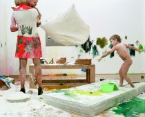
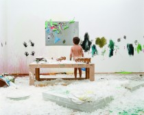
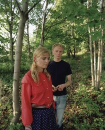
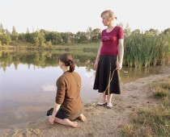

Abenteurer

(e.) Twin Gabriel, Think Tank Sixties, 2003

(e.) Twin Gabriel, Think Tank Sixties, 2003

VIP, Hänsel und Gretel, 2006

VIP, Brüderchen und Schwesterchen, 2006
(e.) Twin Gabriel, VIP / Kerstin Schiefner
Das Wunder sind wir / We are the miracle
curated by Susanne Weiß
July 24 – August 23, 2008
Summerparty: August 16,
4 pm artisttalk with Else Gabriel